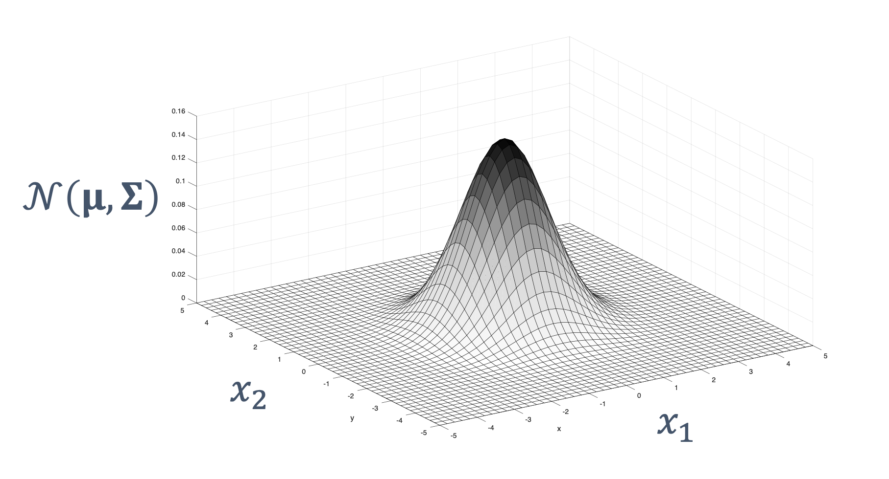
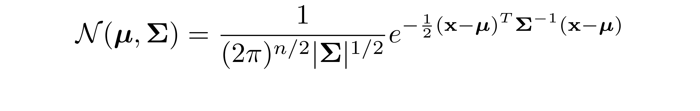
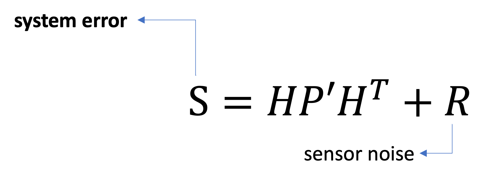

# **Multivariate** Kalman Filter ## **Design of Autonomous Systems** ### csci 6907/4907-Section 86 ### Prof. **Sibin Mohan** --- reality → state is a **multi-dimensional** vector --- $$ state = \begin{bmatrix} position \newline velocity \end{bmatrix} $$ --- $$ state = \begin{bmatrix} position, velocity \end{bmatrix}^T $$ --- <!-- .slide: data-background="white" --> $$ state = \begin{bmatrix} position, velocity \end{bmatrix}^T $$  **multivariate** Gaussian --- **multivariate** Gaussian  --- **multivariate** Gaussian |variable| definition | meaning | |--------|---------|------------| |$\mathbf{x}$ | $\left(x_{1}, x_{2}, \ldots, x_{n}\right)$ |state variable | --- **multivariate** Gaussian |variable| definition | meaning | |--------|---------|------------| |$\mathbf{x}$ | $\left(x_{1}, x_{2}, \ldots, x_{n}\right)$ |state variable | |$\boldsymbol{\mu}$ | $\left(\mu_{1}, \mu_{2}, \ldots, \mu_{n}\right)$ | mean vector | --- **multivariate** Gaussian |variable| definition | meaning | |--------|---------|------------| |$\mathbf{x}$ | $\left(x_{1}, x_{2}, \ldots, x_{n}\right)$ |state variable | |$\boldsymbol{\mu}$ | $\left(\mu_{1}, \mu_{2}, \ldots, \mu_{n}\right)$ | mean vector | | $\Sigma$ | $\Sigma_{i, j}=\operatorname{Cov}\left(x_{i}, x_{j}\right)$ | covariance matrix| || --- <!-- .slide: data-background="black" --> --- but read the textbook chapter on [multivariate Kalman Filters](https://autonomy-course.github.io/textbook/autonomy-textbook.html#multivariate-kalman-filter) please! --- ### multivariate kalman filter | **summary** <img src="img/ekf/multi_kalman/multivariate_summary.png" width="1100"> --- ### multivariate kalman filter | **1. prediction** <br> <img src="img/ekf/multi_kalman/simplified_equation.predict.png" width="1500"> --- ### multivariate kalman filter | **1. prediction** <img src="img/ekf/multi_kalman/simplified_equation.predict.png" width="1500"> <img src="img/ekf/multi_kalman/simplified_equation.predict_uncertainty.png" width="1500"> --- ### multivariate kalman filter | **2. measurement update** --- ### multivariate kalman filter | **2. measurement update** <br> --- ### multivariate kalman filter | **2. measurement update**  --- ### multivariate kalman filter | **2. measurement update** $\quad$ <img src="img/ekf/multi_kalman/simplified_equation.update_kalmangain.png" width="600"> --- ### multivariate kalman filter | **3. final update** <br> --- <!-- .slide: data-background="white" --> **example**: 2D state estimation using multivariate Kalman filters <img src="img/ekf/multi_kalman/2d_estimation.png" width="1500"> --- ### problems with Kalman Filters --- ### problems with Kalman Filters - only works for **linear** systems --- ### problems with Kalman Filters - only works for **linear** systems - next state → linear function of previous state --- ### problems with Kalman Filters - only works for **linear** systems - next state → linear function of previous state - non-linear system example → falling object with air resistance --- ### real world → **non-linear**! --- ### enter **extended kalman filter** (ekf)